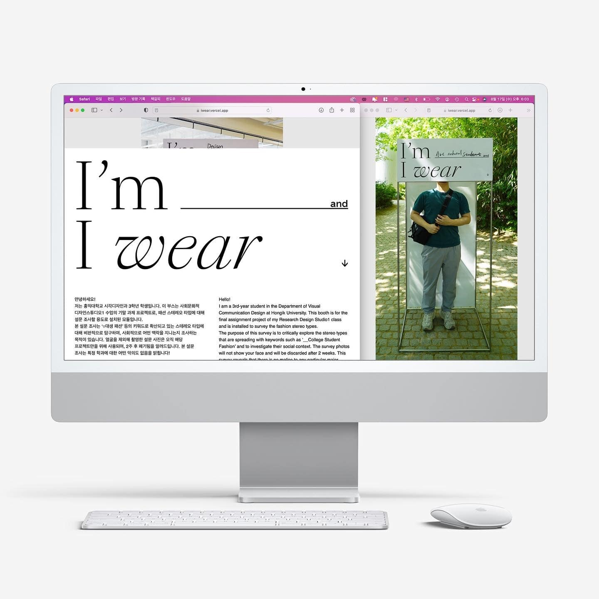

I'm__ and I wear↓
이 프로젝트는 우리가 오늘날 다른 사람들과 어떻게 관계를 맺고 있는지에 대한 고민에 응답합니다. 우리는 매일 소비하는 이미지를 통해 주변에서 접하는 대부분의 현상을 해석하고 이해합니다. 이러한 이미지 기반 경험들은 때로 무의식적인 편견과 고정관념, 오해를 야기하기도 합니다. 같은 맥락에서, 이 작업은 관람자가 패션에 기반을 둔 고정관념과 편견에 대해 재고하게 합니다. 그들은 직접 부스 안으로 들어가 자신의 패션 스타일과 정체성을 사진으로 수집하게 되고, 그 결과물을 웹에서 재확인하며 “패션 프레이밍”에 대해 성찰합니다.
